Métier
Cabinet de conseil
Amélioration de l’habitat
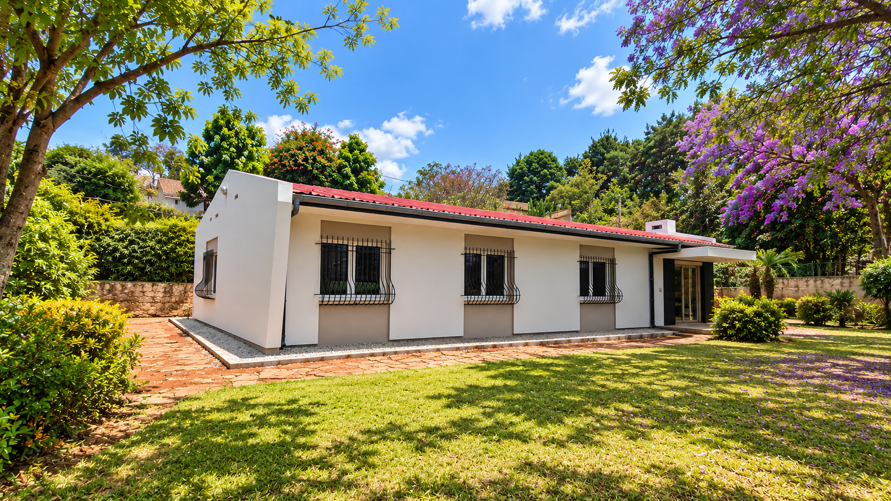
Cabinet de conseil
Amélioration de l’habitat
Antananarivo
Madagascar, 101
De l’étude du projet jusqu’au chantier : conception, construction et rénovation.
Avant / après
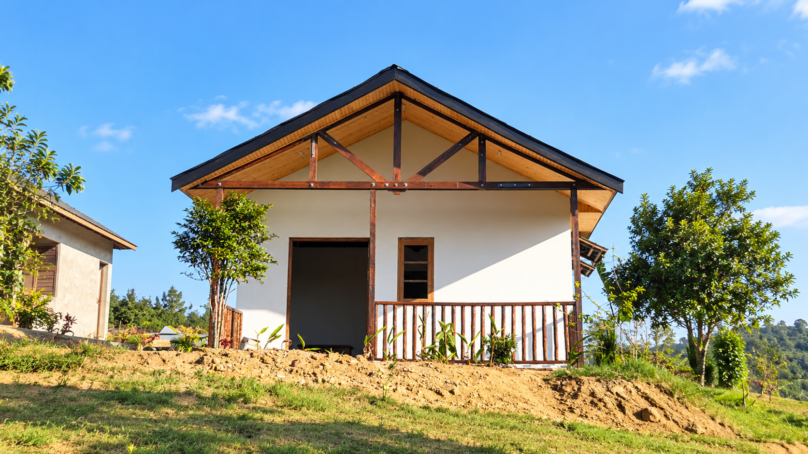
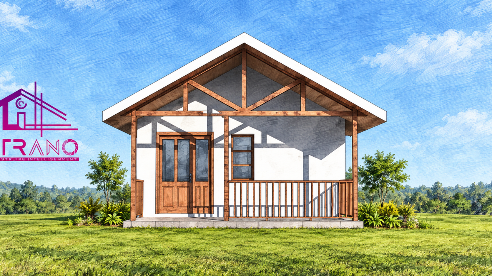
Avant Après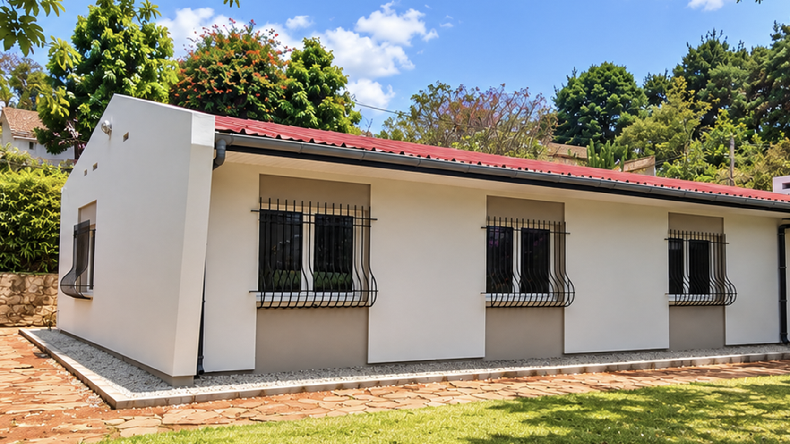
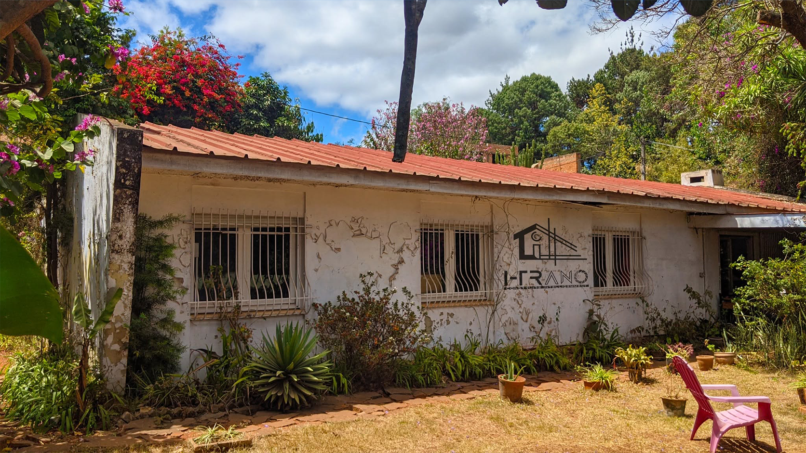
Avant AprèsUn cabinet ancré à Antananarivo. On regarde le lieu, l’usage, et ce que la maison peut devenir. Une pièce ouverte, une grande maison, une petite maison étudiée avec le même soin. Construire, ou reprendre ce qui existe déjà.
Cinq interventions
La cuisine a été ouverte en partie, pour être vue depuis le séjour. L’intérieur change de visage.
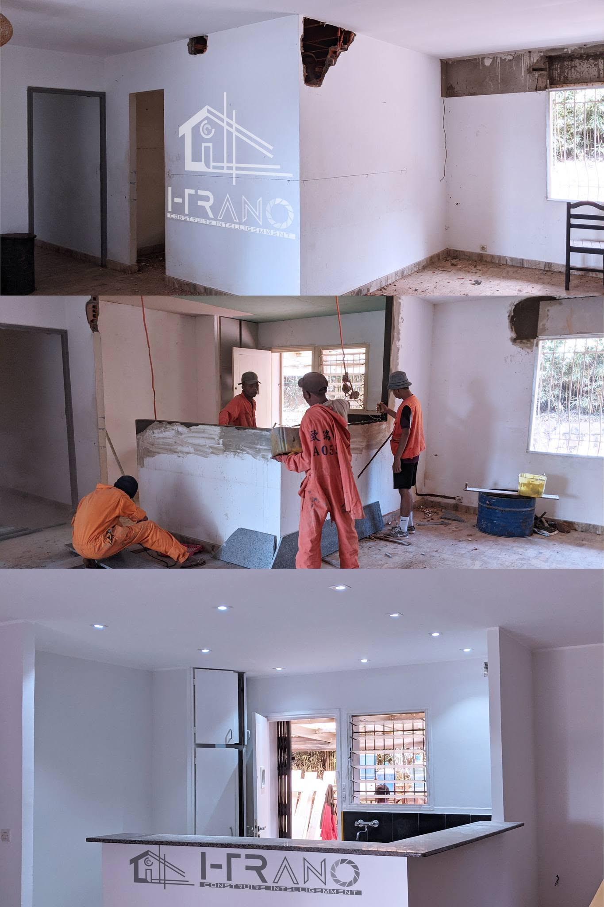
Le projet d’une grande maison a été développé dans son ensemble, du volume jusqu’à la façade.
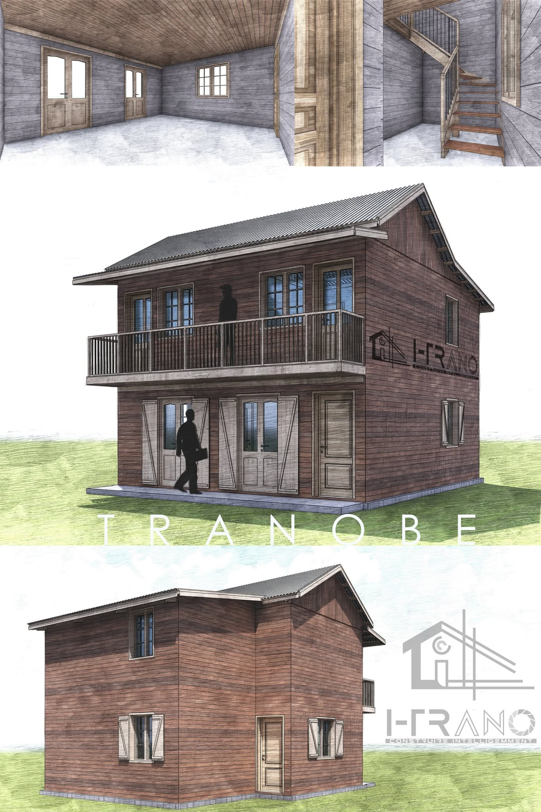
Une maison dite petite demande la même attention. L’élévation est étudiée, puis le chantier suit.
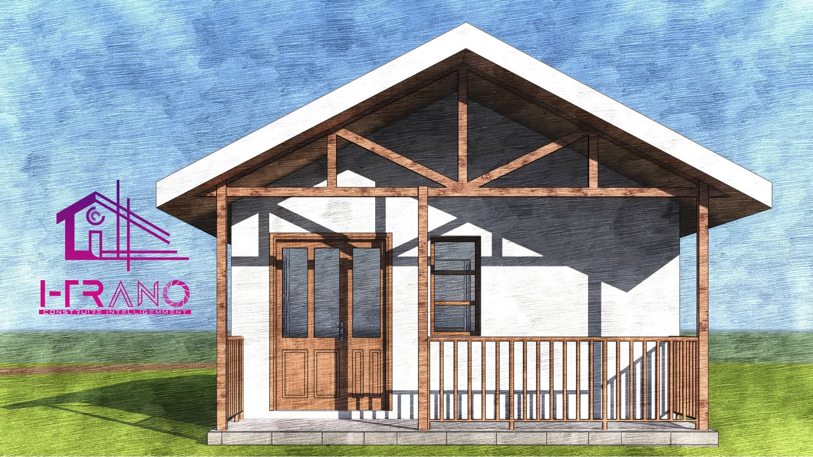
Le travail ne se limite pas au neuf. Ici, une maison déjà là a été reprise : toiture, murs, façade.
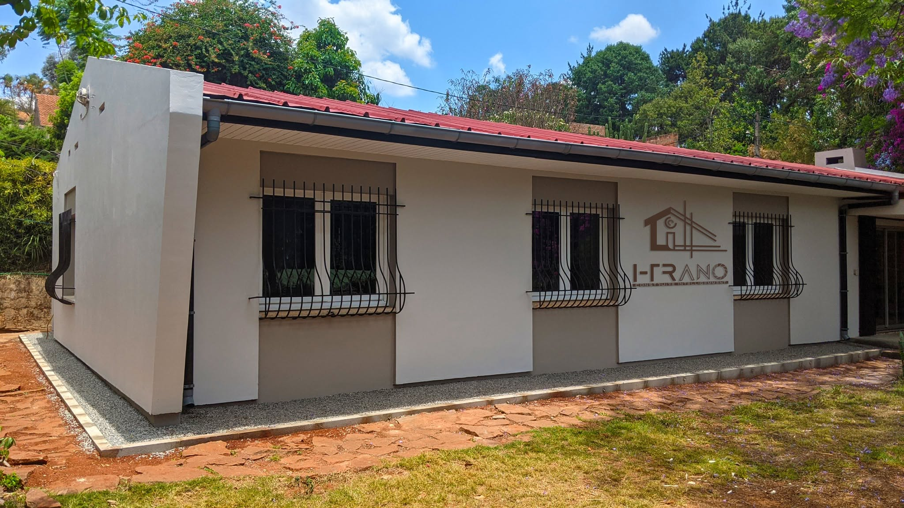
Le dessin et le chantier avancent ensemble. La maison est en construction.
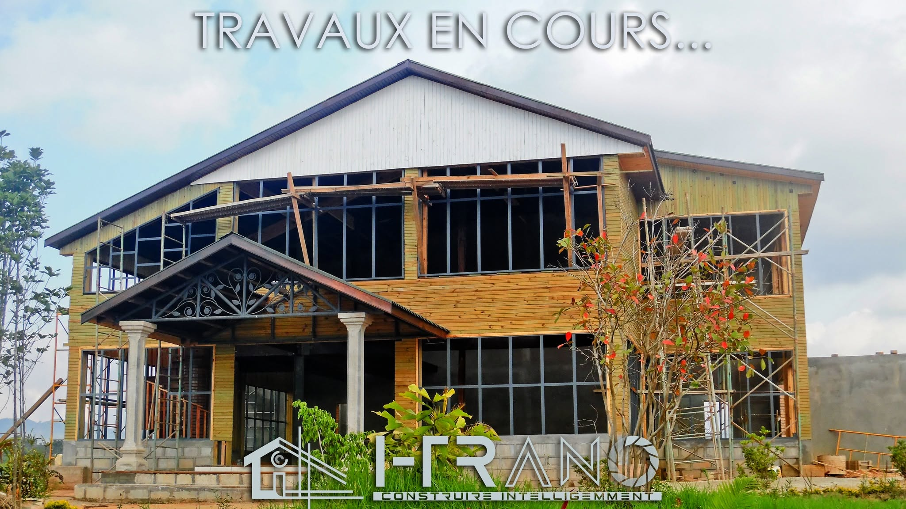
Approche
01
On commence par regarder. Même une petite maison appelle un dessin clair : la façade, l’usage, la manière d’entrer.
02
Ensuite le chantier. Construction neuve, ouverture d’une pièce, reprise d’une façade. Améliorer et rénover comptent autant que bâtir.
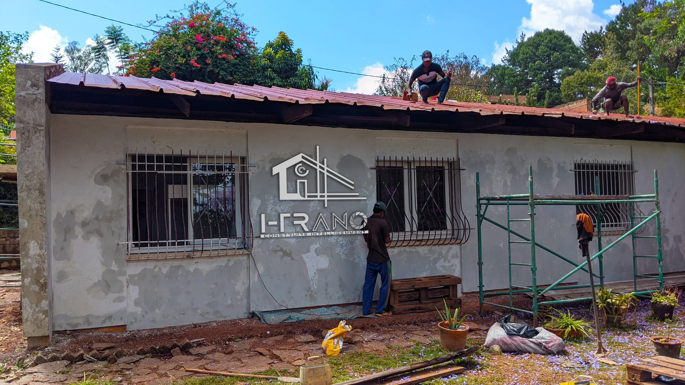